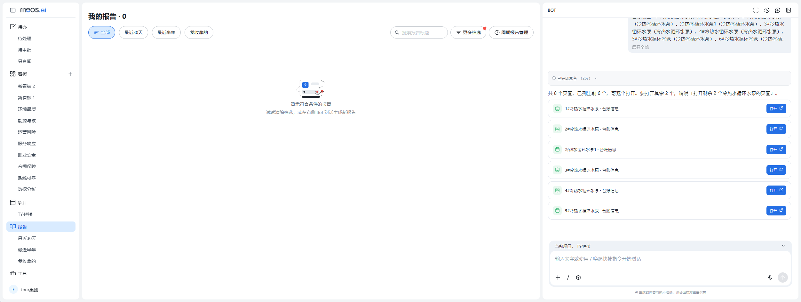
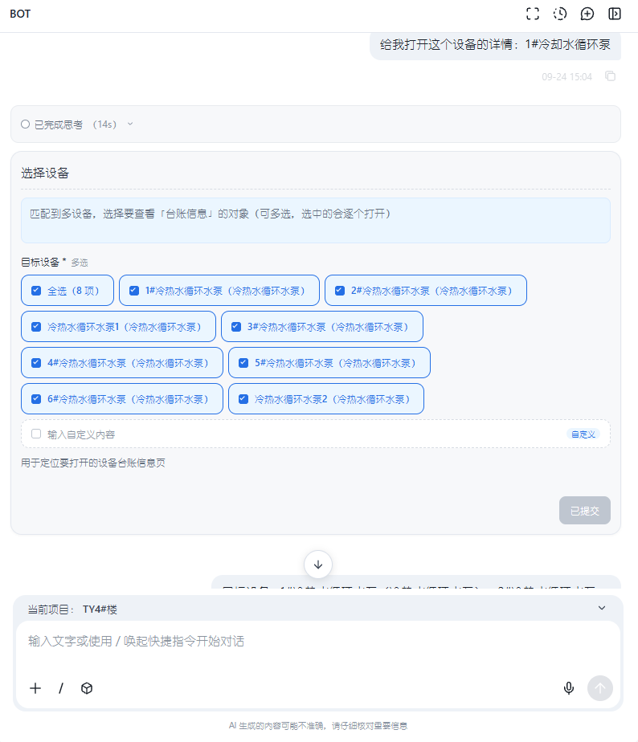
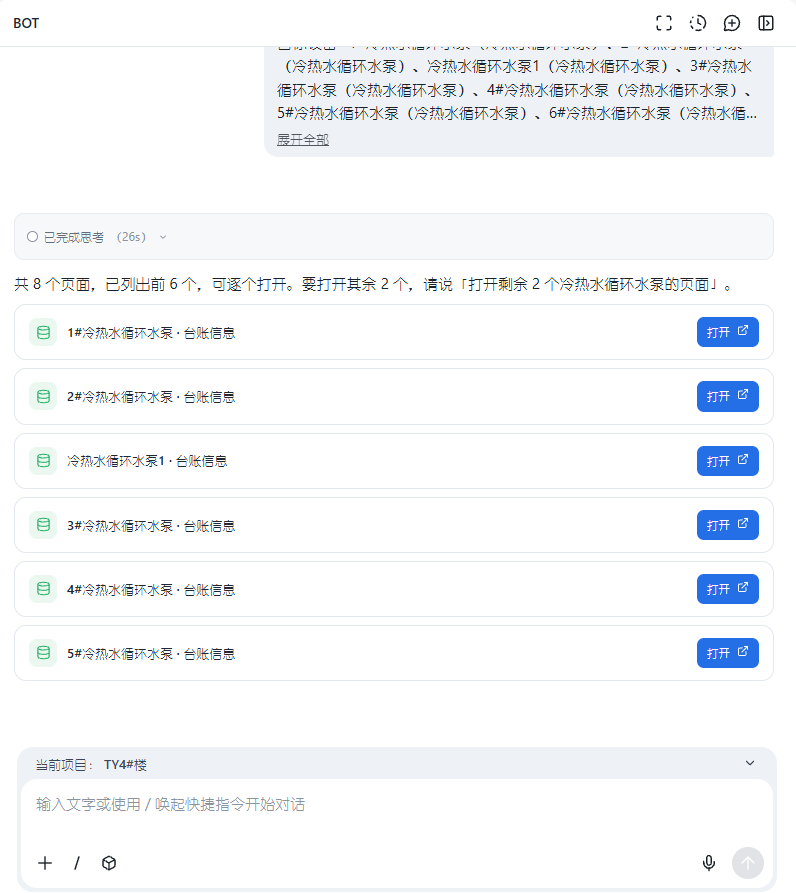
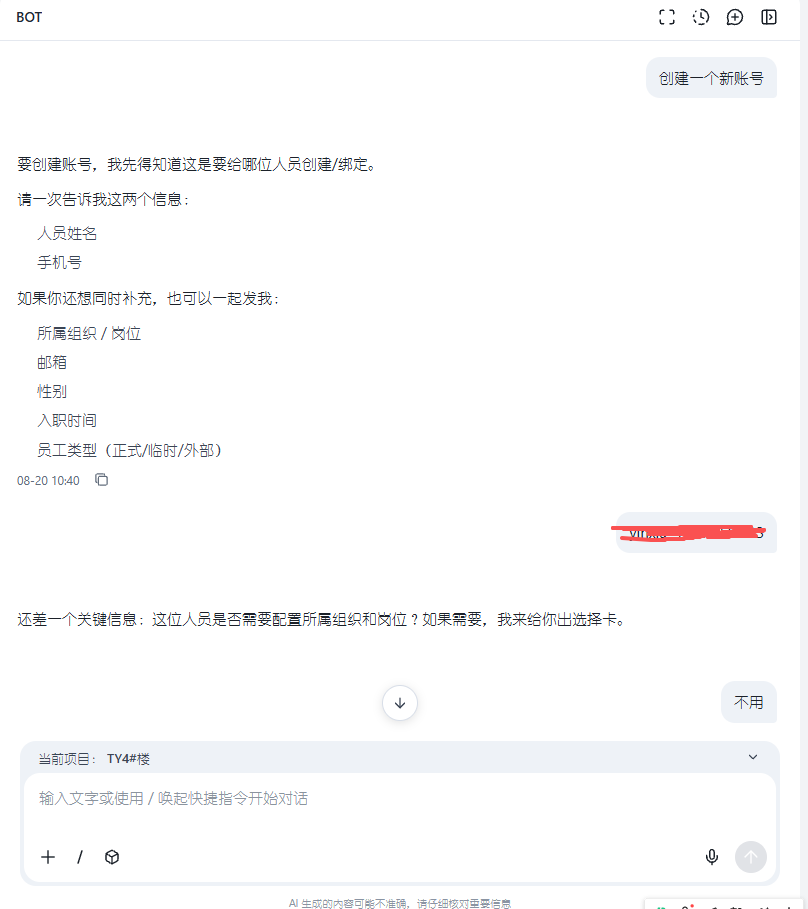
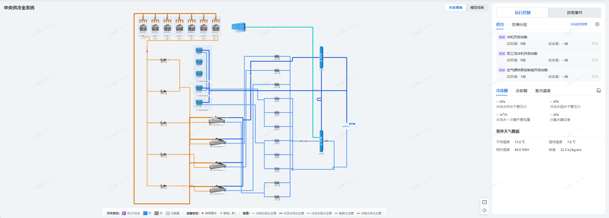
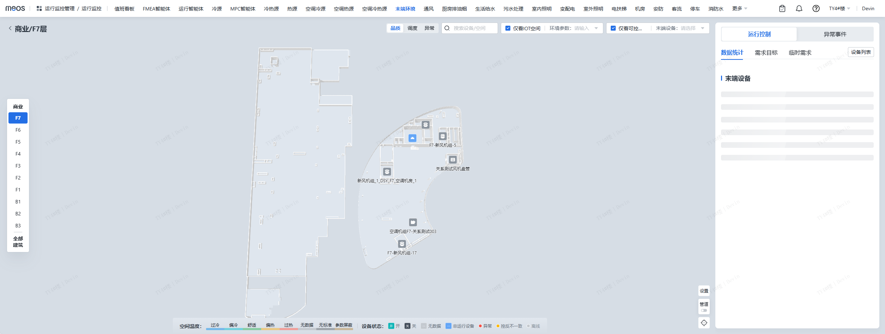
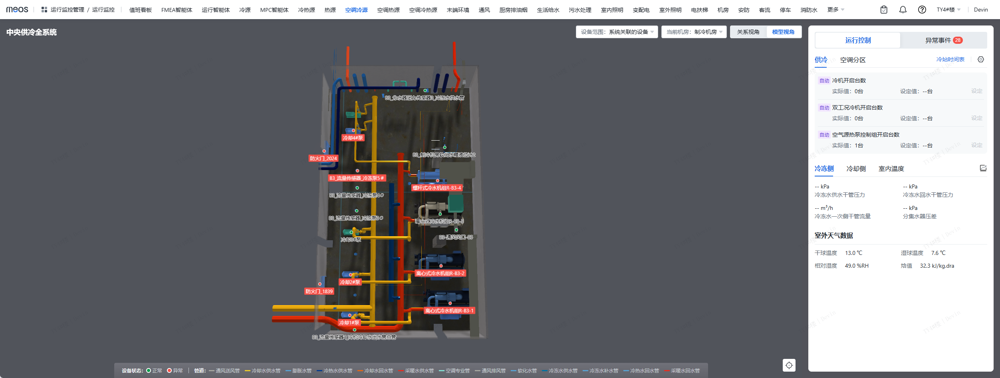
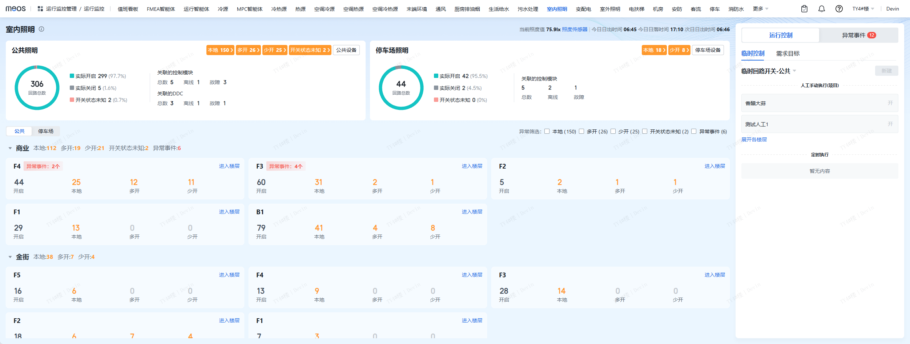

MEOS Agent.
业务智能体与对话组件
把设备查询、对象选择与业务操作放进对话。以下是我独立负责的 Agent 服务端与 Bot 前端在业务平台中的实际界面。

与业务页面一起工作
左侧保留业务工作区，右侧承接对话、查询结果和后续操作。
对话交互细节
从模糊需求到明确对象，再到可以操作的结果。
先明确对象，
再进入业务。
同一个名称可能匹配多个设备。将候选对象交给用户选择，让后续操作有明确的目标。
- 用户意图
- 打开指定设备的台账详情
- 交互方式
- 候选对象多选 / 全选 / 补充输入
- 关键处理
- 保留当前项目上下文，明确设备范围
截图中，Bot 将匹配结果呈现为可选择的设备卡片。

查询之后，
直接打开详情。
把查到的设备组织为结果列表。每个对象都提供业务入口，用户可以继续查看和操作。
- 用户意图
- 查看多个设备的台账信息
- 交互方式
- 结构化结果卡片 / 业务详情跳转
- 关键处理
- 分批呈现结果，支持后续对话继续查看
截图展示首批设备结果，其余对象可以通过追问继续打开。

信息不完整，
就继续问清楚。
“创建一个账号”还不足以执行。先收集人员与联系方式，再根据对话补充组织和岗位配置。
- 用户意图
- 为人员创建或绑定账号
- 交互方式
- 必要信息追问 / 上下文承接
- 关键处理
- 逐步明确需求，避免凭空补充业务信息
截图记录信息收集阶段，其中的个人信息已遮挡。

运行监控与数字孪生
meos-control-web · 系统关系、空间设备、三维机房与照明运行场景。
供冷系统关系图
通过管线呈现冷机、水泵、阀门等设备的连接关系，结合右侧面板查看运行参数与控制入口。

楼层末端设备分布
在楼层平面图中定位末端设备，通过楼层切换、空间筛选与设备标识查看目标区域，并衔接运行控制和异常事件入口。

三维机房模型
以三维模型展示设备与管线的空间布局，结合设备标签和异常标识定位对象，同时提供运行控制与异常事件面板。

室内照明运行看板
汇总公共照明和停车场照明的回路状态，按楼层呈现开启、本地、多开、少开及异常信息，并提供临时控制入口。
